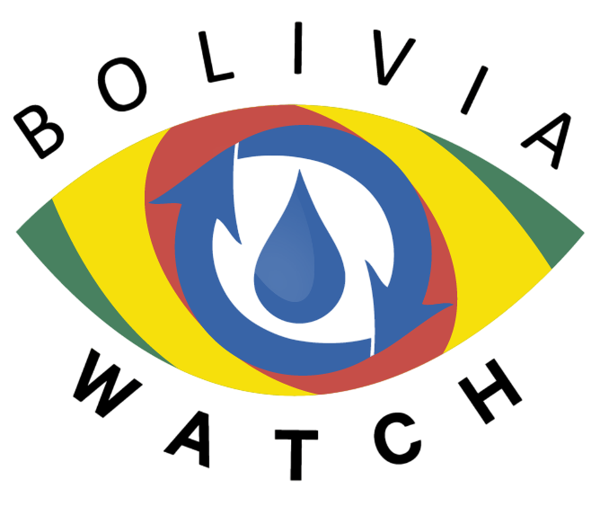
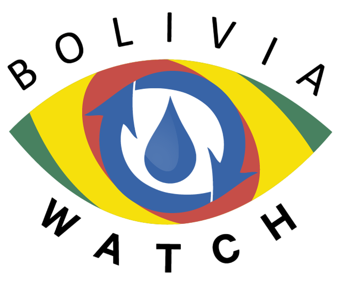

Sobre el proyecto
La evaluación del balance hídrico nacional en Bolivia es una prioridad del Estado para determinar la disponibilidad actual de agua en todas las regiones del país, para su desarrollo socioeconómico en concordancia con un adecuado uso y distribución del agua en el territorio. Desde 1992, se han realizado varias actualizaciones del Balance Hídrico, con el objetivo de desarrollar una línea base (1992) y herramientas para mejorar la toma de decisiones (2012 y 2018). Estos estudios permitieron estimar la situación hídrica del país a través de diferentes metodologías de cálculo. La actualización del Balance Hídrico de Bolivia en 2018 contó con la participación de investigadores del SEI, el Servicio Nacional de Meteorología e Hidrología de Bolivia (SENNAMHI) y varias instituciones académicas con experiencia en la caracterización hidrológica del territorio boliviano.